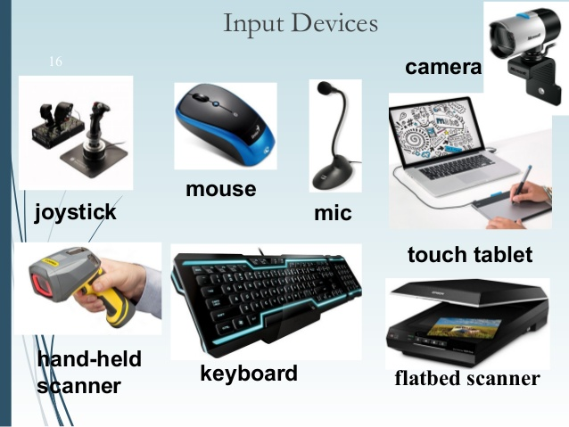

Ivy's Introduction to Computers
Hardware
Hardware is the physical component of a computer. It allows the user to be able to alter and communicate with the computer. Hardware of a computer includes storage, processor, and peripherals like monitor, keyboard, and speaker, and other physical components of a computer such as graphic card, and sound card.

Storage
Hard Disks
A hard disk drive is a device that stores and retrieves digital information using magnetic storage. It uses one or more rigid, magnetic material coated disks that rapidly rotate. The disks are paired with magnetic heads which read and write digital information to the disk surfaces. The information is accessed randomly in any order and not only sequentially. Hard disks are a type of non-volatile storage that retain stored data even when the machine is powered off.

Memory
There are two types of memory, short term memory and long term memory. The short term memory is called "RAM (random access memory)". The long term memory is called "ROM (read only memory)".
RAM stores data that is being used so that the processor can retrieve it quickly. Every data stored in RAM gets deleted when the power is taken off. RAM is relatively very expensive because of its high functioning and speed. The capacity usually runs from 4G to 16G. When data stored in RAM is written to secondary memory, it must be copied into primary memory before it is processed by the CPU.
ROM stores data that is prerecorded and programs that help the computer boot up. Data stored in ROM is kept permanently even after the computer is turned off and cannot be changed until it is deleted or changed by the user. ROM is much cheaper than RAM because it runs much slower. When RAM runs out, computer starts working off of hard drive and becomes very slow.
Cloud
Cloud, a metaphor for the internet, is where users can store and access their data on the internet instead of the computer's hard drive. All data stored on Cloud is accessed over the internet. Some companies that users can pay and use the cloud system are Microsoft(OneDrive), Apple(iCloud), Google, and Amazon. Users get a certain amount of capacity that they can have their data on the cloud.
Processor
Role
Processors fetch, decode, execute the instructions that is received from the coding that is present in programs. A processor has a unit of power that is called "Central Processing Unit". A processor is often called a brain of a computer as well.
Types
There are several different types of processing units in a computer. Each unit manages different parts that are needed. CPU(Central Processing Unit), GPU(Graphic Processing Unit), DSP(Digital Signal Processor), VPU(Video Processing Unit), and TPU(Tensor Processing Unit) are the examples. CPU processes data and controls the flow of data between the computer's other units. ALU, Arithmetic Logic Unit, is within the CPU and it performs logic and arithmetic operations. The speed of ALU is measured in nanoseconds and the speed of CPU is measured in megahertz (MHz, million of cycles per second) or gigahertz (GHz, billion of cycles per second).
Peripherals - I/O
Peripherals are external devices that can be connected with a computer to control its input and output. There are two different types of peripherals; input devices and output devices.
Input Devices
Input devices allow the user to give instructions and data to the computer. Examples of input devices are keyboard, mouse, scanner, camera, and microphone.

Output Devices
Output devices are used to send or show data to another computer or a user. Examples of output devices are printer, monitor, speaker, and headphones.
Examples
Networking
Why?
The purpose of networking is to share resources, storage, printer, internet connection, etc. It allows users to reliably share and exchange data. By sharing devices such as printers, it allow users to reduce costs.
Types
There are two different types of networking, peer to peer and climate networks. Peer to peer network allows certain files to be shared with everyone or certain selected people. Climate networks have nodes identified with the spatial grid points and are defined arbitrarily.
LAN and WAN
LAN (Local Area Network) and WAN (Wide Area Nerwork) are two different types of networking. LAN is a computer network which is limited to a small space such as an office, single building, or inside a campus. LAN is typically a private network owned and maintained by a single organization. WAN covers larger geographical locations and is composed of multiple LANs. It is the Network Service Providers who provides the connectivity solutions for WAN.
How?
One of the networking devices is modem which modulate the electric waves, encode digital informations, and decode it back to transmit the informations in the form that computers can read. Router is a traffic manager for a network which assigns addresses and connect different types of networks. Networking offers security options including password protection to restrict access to certin files.

Copyright 2017 Ivy Park. All Rights Reserved.